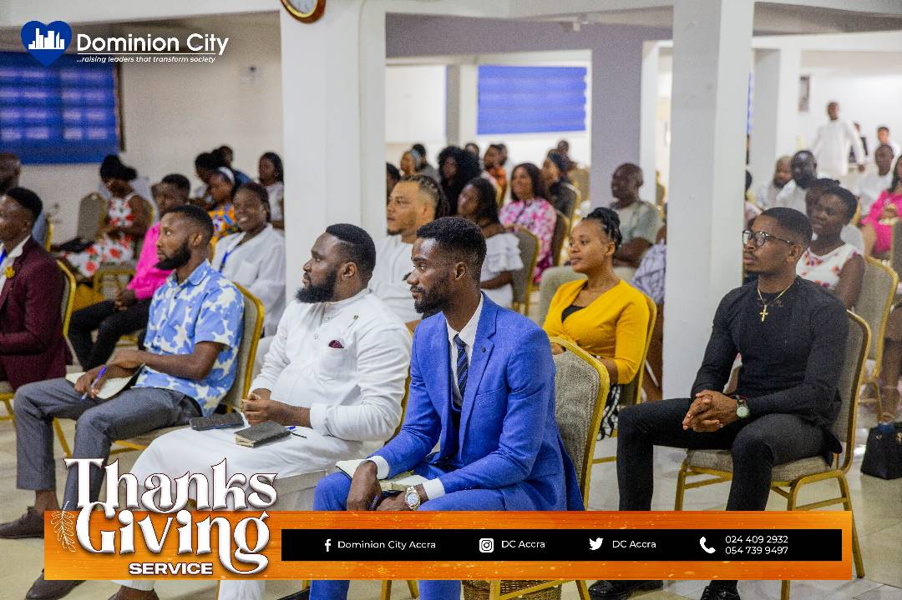
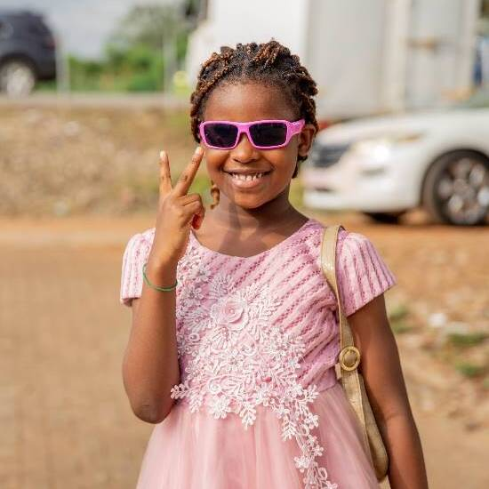
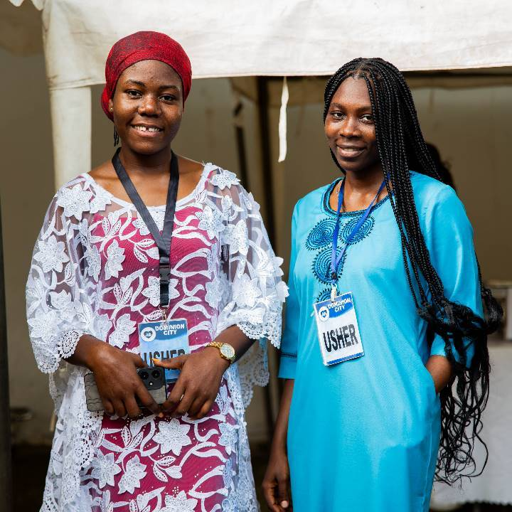

Dominion City Church is a Christian ministry founded by Pastor David Ogbueli in 1996. The church's mission is to raise leaders that will transform society.

We are a church to
INFANTS
The Lord has a plan and a purpose for your baby. Afterall in Psalm 139:13 we see that "He created their inmost being; He knit them together in their mothers womb".

CHILDREN
Jesus said in Matther 19:14, “Let the little children come to me” and we believe in bringing them to Him every chance we get so they can grow to fulfil their calling.

YOUTHS
Ecclesiastes 12:1 says not to "let the excitement of youth cause you to forget your Creator." and with life happening, consistent fellowship is key to staying the path.
ADULTS
As the Lord instructs us in Ephesians 4:15, "we are to grow up in all aspects into Him who is the head, even Christ" and in Dominion City there is teaching and practice that brings growth.